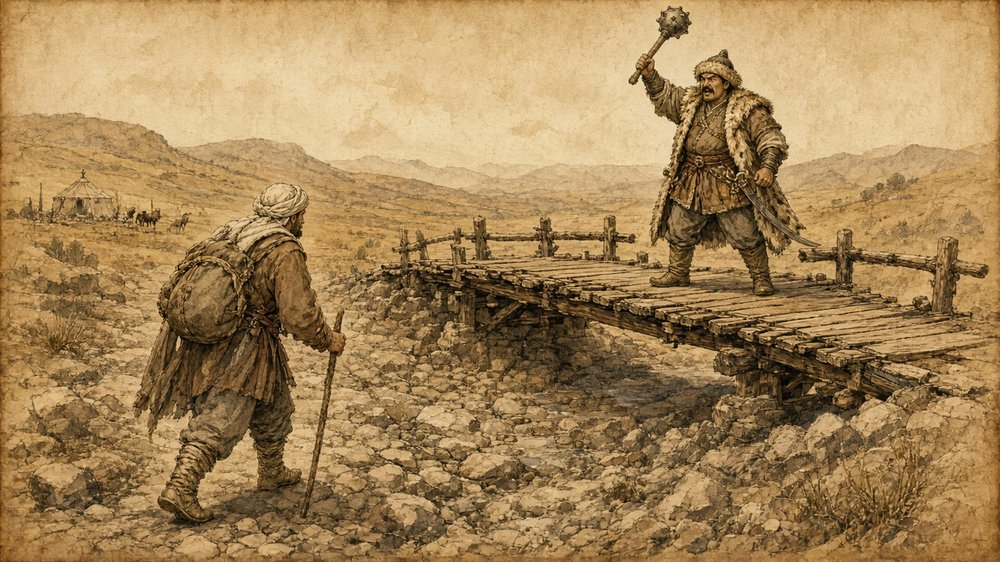

Dede Korkut hikâyelerinden resimli, günlük bölümler. Her gün yeni bir bölüm.
Deli Dumrul · 1. Bölüm · 04.10.2026
Deli Dumrul – Köprü ve Haraç
Kuru bir çayın üstüne köprü yaptıran Deli Dumrul, böbürlenerek köprünün başında bekler.Köprüden geçenlerden otuz üç akçe haraç alır; bu paranın hesabını kimse soramaz.

Köprüye girmeyip kuru yataktan geçmek isteyenden ise kırk akçe ister ve onu sopayla tehdit eder.Gün batarken kollarını açar: "Bu dünyada benim gibi bir yiğit daha var mı?"Atına biner. Uzaktaki obadan ağlama sesleri yükselir, kara bir çadırın önünde yas tutulmaktadır.Dumrul durur, düşünür. Gecenin gölgesinde bilmediği bir şey onu izlemektedir. (Devamı yarın)